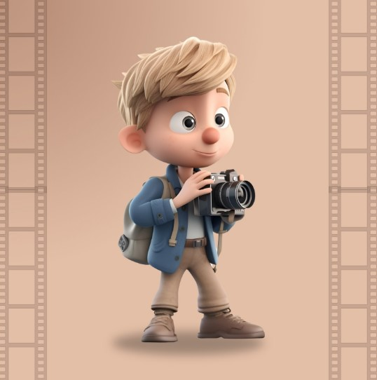

Economia Circular aplicada à manutenção de frotas
Estrutura do Modelo de Negócio: Mobile Fleet – Circular
O mercado automotivo brasileiro enfrenta dois problemas simultâneos: frotas corporativas que perdem produtividade por horas paradas em oficinas convencionais, e um passivo ambiental crescente causado pelo descarte irregular do Óleo Lubrificante Usado ou Contaminado (OLUC). A Mobile Fleet – Circular resolve ambos com um único modelo de negócio integrado.
Ao realizar a manutenção preventiva diretamente no pátio do cliente via vans adaptadas, o negócio elimina o tempo de inatividade da frota e, ao mesmo tempo, coleta e destina corretamente todo o OLUC gerado — encaminhando-o a rerrefinadoras credenciadas pela ANP, em conformidade com a Resolução CONAMA n.º 362/2005 e a PNRS (Lei 12.305/2010).
Fundamento Teórico e Circularidade
O modelo foi desenvolvido à luz da Economia Circular, cujos princípios sistematizados por Guarnieri et al. (2024) e Pimentel & Fontanetti (2020) propõem manter materiais em ciclos fechados de produção, eliminando o conceito de descarte. Na Mobile Fleet, o OLUC — historicamente um passivo do setor — torna-se matéria-prima para novo ciclo produtivo, gerando receita circular adicional de ~R$ 1.386/mês e reduzindo em até 85% o consumo energético frente ao óleo virgem.
O Negócio
A Mobile Fleet – Circular é uma empresa de serviços automotivos que realiza a manutenção preventiva de frotas corporativas diretamente no pátio do cliente, por meio de vans adaptadas que funcionam como mini oficinas móveis. O diferencial que a posiciona como negócio circular está na integração obrigatória da coleta, transporte e destinação certificada do OLUC gerado em cada atendimento, encaminhando-o a rerrefinadoras credenciadas pela ANP.
O mix operacional é composto por 80% de veículos pesados (caminhões, ônibus, máquinas agrícolas — consumo médio de 12 litros por troca) e 20% de veículos leves (consumo médio de 4,5 litros por troca), refletindo o perfil da frota corporativa do Noroeste do Paraná.
A capacidade instalada é de 220 atendimentos/mês (2 vans × 5 atend./dia × 22 dias úteis), gerando 2.310 litros de OLUC coletados mensalmente. A operação segue um fluxo integrado de cinco etapas: Agendamento Digital → Deslocamento → Execução → Documentação → Destinação Circular do OLUC.
Segmentos de Clientes
O negócio opera com dois segmentos distintos, atendendo à região da AMERIOS (Noroeste do Paraná), predominantemente voltada ao transporte de cargas, construção civil e agroindústria. O modelo comercial diferencia contratos recorrentes (Plano Frota) de atendimentos avulsos.
Frotas Corporativas
Dor central: perda de produtividade com frota parada + passivo ambiental pelo OLUC sem destinação adequada. Plano Frota: R$ 300–450/mês (pesados) e R$ 180–280/mês (leves).
- Transportadoras e empresas de logística
- Construtoras e locadoras de veículos
- Agroindústrias e cooperativas
- Empresas de transporte de passageiros
Clientes Particulares
Dor central: falta de tempo + desconhecimento sobre a destinação correta do OLUC. Atendimento avulso via app com emissão de comprovante ambiental digital.
- Motoristas de aplicativo (Uber, 99)
- Proprietários de veículos premium
- Profissionais autônomos com pouco tempo
Do Passivo ao Ativo: O OLUC como Recurso Circular
Na lógica do modelo linear tradicional, o setor automotivo opera segundo o fluxo: produzir lubrificante → aplicar no veículo → descartar o óleo usado. O OLUC é o resíduo inevitável desse modelo — e historicamente um passivo operacional e ambiental. A Mobile Fleet – Circular inverte essa lógica: ao integrar a coleta e destinação certificada do OLUC como parte central de sua proposta de valor, o negócio transforma o maior passivo do setor em um ativo circular.
Conforme Pimentel e Fontanetti (2020), a lógica circular adota uma abordagem em que se usam recursos em vez de consumi-los, e os materiais sintéticos ou minerais devem ser continuamente mantidos no sistema de produção, em ciclo fechado. O OLUC coletado pela Mobile Fleet materializa exatamente esse princípio — sendo processado por rerrefinadoras credenciadas e reintroduzido na cadeia produtiva com qualidade equivalente ao óleo virgem, consumindo até 85% menos energia que a produção a partir do petróleo bruto.
Durabilidade e Eficiência
Uso de óleos de maior qualidade, armazenamento em tanques herméticos e prevenção de vazamentos durante o atendimento — prolongando a vida útil dos fluidos e evitando contato do OLUC com o solo.
Materiais Reciclados
Adoção de embalagens recicláveis e incorporação de óleo rerrefinado ao portfólio. O óleo lubrificante rerrefinado possui qualidade equivalente ao virgem e pode ser oferecido como opção a clientes B2C e frotas com menor restrição de homologação.
Rerrefino de Alta Qualidade
O OLUC é coletado em tanques herméticos, transportado e entregue a rerrefinadoras credenciadas pela ANP — que o processam e reintroduzem na cadeia produtiva com qualidade controlada, fechando o ciclo técnico do lubrificante conforme CONAMA 362/2005.
Redução da Pegada Ecológica
Em operação plena, a Mobile Fleet evita o descarte irregular de 2.310 litros de OLUC por mês — equivalente à prevenção de contaminação de 2,31 bilhões de litros de água, conforme parâmetros do IBAMA e Guarnieri et al. (2024).
A Circularidade como Fonte de Receita
A gestão circular do OLUC não representa apenas uma obrigação legal — ela é estruturada como fonte de receita e diferenciação competitiva: a taxa de destinação ambiental cobrada ao cliente (R$ 25–45 por troca) cobre o custo logístico da coleta e gera margem adicional; a venda do OLUC à rerrefinadora (~R$ 0,60/litro) gera receita secundária de ~R$ 1.386,00/mês em operação plena. Conforme Guarnieri et al. (2024), a Economia Circular, quando integrada ao core do modelo de negócio, é economicamente superior ao modelo linear.
Modelo de Negócio – Mobile Fleet Circular
- Shell, Mobil, Castrol, Petrobras, Ipiranga (lubrificantes homologados)
- MANN-FILTER, Mahle, Fram (Filtros)
- Empresas certificadas em destinação de óleo usado
- Distribuidores automotivos regionais
- Manutenção preventiva móvel no local do cliente
- Orientação técnica sobre intervalo real de troca
- Transporte e entrega do OLUC à rerrefinadora
- Emissão de comprovante ambiental por atendimento
- Gestão da plataforma digital (agendamento, histórico, alertas)
- Prospecção e captação de clientes B2B
- Gestão do estoque para atender os respectivos clientes
- Troca de óleo delivery: atendimento no local
- Redução do tempo de inatividade da frota
- Serviço especializado para veículos leves, utilitários e caminhões
- 2.310L de OLUC/mês retornam ao ciclo via rerrefino – zero descarte irregular
- Troca de óleo baseada em análise técnica real – sem desperdício
- Comprovante legal de destinação OLUC: proteção regulatória ao cliente; Relatório ESG de impacto ambiental por frota.
- Atendimento programado com Plano mensal ou programado, com histórico digital de manutenção
- Redução do prejuízo operacional causado pelo deslocamento e pela inatividade de veículos.
- Contratos de manutenção preventiva B2B, contrato mensal para frotas pesadas e leves
- Relatórios periódicos de desempenho da frota
- Notificações automáticas de trocas por KM e agendamento online, focado mais em B2C
- B2B · 80%
- Transportadoras e logística da AMERIOS
- Construtoras, agroindústrias e cooperativas
- Locadoras de veículos
- B2C · 20%
- Motoristas de app (Uber, 99)
- Proprietários de veículos premium
- Vans Adaptadas ( Mini oficina móvel) e tanques herméticos para OLUC
- Equipamentos de troca de óleo e bombas de sucção
- Tanques e equipamentos para descarte correto de óleo usado
- Estoque de lubrificantes, filtros e fluidos
- Plataforma digital de gestão de frotas
- Licenciamento ambiental trifásico (CEMA 107/2020)
- Vendedores e técnicos especializados
- Plataforma Digital para- app e site para agendamentos
- WhatsApp Business
- Visitas comerciais B2B a transportadoras e frotas corporativas
- Google Meu Negócio e Redes Sociais
- Fixos
- Parcelas BNDES/FINAME (R$ 3.500/mês)
- Salários equipe: 5 colaboradores (R$ 14–16k/mês)
- Seguro vans + responsabilidade ambiental
- Plataforma digital e marketing digital
- Variáveis
- Estoque lubrificantes/filtros (~R$ 19–25k/mês)
- Combustível + frete OLUC à rerrefinadora
- Impostos – Simples Nacional (~9%)
- Troca de óleo completa (óleo + filtro + mão de obra + deslocamento)
- Filtros de ar, cabine e combustível
- Plano Frota B2B — pesados: R$ 300–450/veíc/mês; leves: R$ 180–280/veíc/mês
- Atendimentos avulsos pesados: R$ 280–380/atend.
- Atendimentos avulsos leves: R$ 150–230/atend.
- Taxa destinação ambiental OLUC: R$ 25–45/troca
- Receita circular — venda OLUC: ~R$ 1.386/mês
- Relatórios ESG premium: R$ 200–500/mês/empresa
Investimento e Projeção de Resultados
O investimento total para implantação da Mobile Fleet – Circular com 2 vans é de R$ 297.000,00, com estrutura de capital mista: R$ 147.000,00 de capital próprio (49,5%) e R$ 150.000,00 via financiamento BNDES/FINAME (7,5% a.a. / 48 meses), conforme metodologia de Silva et al. (2010). A projeção considera crescimento gradual: 60% (Ano I), 75% (Ano II), 90% (Ano III) e 100% (Ano IV) da capacidade instalada.
Investimento Inicial
2 vans adaptadas (R$ 130k) + estoque inicial (R$ 45k) + plataforma digital (R$ 18k) + licenciamento ambiental (R$ 8,5k) + capital de giro 3 meses (R$ 79k) + demais itens operacionais.
TIR — Taxa Interna de Retorno
TIR mensal de 1,94% supera a TMA de 1,0%/mês (12% ao ano), confirmando a viabilidade econômica do investimento. VPL positivo de R$ 126.569,00 em 4 anos.
Payback
Retorno do investimento em 2 anos e 9 meses — compatível com o perfil de negócios B2B com contratos recorrentes, conforme Cordeiro, Leismann e Walter (2021). Resultado positivo já no Ano I.
Índice de Lucratividade
IL de 1,43 (aceitável > 1,0 ✓). Taxa de rentabilidade sobre o investimento de 203,1% em 4 anos. Probabilidade estimada de lucro ~83% (análise probabilística).
Resultado Líquido Projetado por Ano
Ano I (60%): R$ 25.340 | Ano II (75%): R$ 113.160 | Ano III (90%): R$ 202.260 | Ano IV (100%): R$ 262.490. Receita bruta em operação plena: R$ 949.000/ano. Ticket médio ponderado por atendimento: ~R$ 359 (mix 80/20 pesados/leves).
Licenciamento Ambiental
Pela natureza de sua atividade — o manuseio de óleos lubrificantes usados e filtros (classificados como resíduos perigosos) — a Mobile Fleet opera sob um rigoroso framework regulatório. A conformidade com a Resolução CONAMA nº 362/2005, a Política Nacional de Resíduos Sólidos (Lei nº 12.305/2010) e a Resolução CEMA nº 107/2020 (Paraná) não é apenas uma exigência legal, mas um diferencial competitivo crítico, já que grandes frotistas exigem fornecedores com práticas sustentáveis comprovadas.
Gestão de Resíduos e Responsabilidade
A operação foi estruturada para garantir a rastreabilidade total e o descarte ecologicamente correto, focando em três pilares:
- Destinação Final: Encaminhamento obrigatório de resíduos para rerrefino e recicladores credenciados.
- Controle Documental: Manutenção rigorosa de manifestos de transporte e registros que asseguram a conformidade perante os órgãos fiscalizadores.
- Responsabilidade Compartilhada: Gestão ativa junto a parceiros logísticos para mitigar riscos ambientais durante o transporte e armazenamento.
O Processo de Licenciamento Ambiental
Devido ao potencial poluidor da operação e à escala do projeto, a Mobile Fleet adota o licenciamento ambiental trifásico, conforme preconiza a Resolução CEMA nº 107/2020. Este processo garante que a empresa nasça com segurança jurídica e viabilidade técnica:
Licença Prévia (LP)
Avalia a viabilidade ambiental do empreendimento antes de qualquer obra ou operação. Exige Estudo de Impacto Ambiental (EIA) e Relatório de Impacto (RIMA).
Licença de Instalação (LI)
Autoriza a instalação conforme os projetos aprovados na LP. Exige projetos executivos e programas de controle ambiental.
Licença de Operação (LO)
Autoriza o início efetivo das operações. Exige relatórios de conformidade comprovando atendimento a todas as condicionantes anteriores.
Conclusão
A Mobile Fleet – Circular demonstra que é possível construir um modelo de negócio economicamente viável a partir da integração de dois problemas simultâneos do setor automotivo brasileiro: a inatividade operacional das frotas corporativas e o passivo ambiental gerado pelo descarte irregular do OLUC. Ao transformar o resíduo mais crítico do setor em ativo circular — fonte de receita e diferenciação competitiva —, o negócio materializa os princípios da Economia Circular sistematizados por Guarnieri et al. (2024) e Pimentel e Fontanetti (2020).
Viabilidade Confirmada
Os indicadores financeiros validam o modelo: TIR de 1,94%/mês (acima da TMA), VPL positivo de R$ 126.569,00, Payback de 2 anos e 9 meses e IL de 1,43 — com resultado positivo já no primeiro ano de operação, mesmo com capacidade conservadora de 60%. A receita circular do OLUC (~R$ 1.386/mês) e a taxa de destinação ambiental (R$ 25–45/troca) demonstram que a circularidade, quando integrada ao core do negócio, é economicamente superior ao modelo linear.
Conformidade Legal e Impacto Social
A operação sob o licenciamento ambiental trifásico (CEMA 107/2020), em conformidade com a CONAMA 362/2005 e a PNRS (Lei 12.305/2010), garante segurança jurídica plena e diferencial competitivo perante grandes frotistas. Em operação plena, a Mobile Fleet previne a contaminação de 2,31 bilhões de litros de água por mês — impacto socioambiental mensurável e comunicável em relatórios ESG, reforçando o posicionamento circular da empresa junto ao segmento B2B.
A Mobile Fleet – Circular posiciona-se como solução inovadora, viável e sustentável para o mercado do Noroeste do Paraná, com real potencial de expansão para outras regiões do estado e do país.
- BRASIL. Lei n.º 12.305, de 2 de agosto de 2010. Institui a Política Nacional de Resíduos Sólidos (PNRS). Brasília, 2010.
- CONAMA. Resolução n.º 362, de 23 de junho de 2005. Destinação final de óleo lubrificante usado ou contaminado. Brasília, 2005.
- CORDEIRO, L. G.; LEISMANN, E. L.; WALTER, S. A. Projeções de resultados econômicos para uma empresa do setor de franquias de escolas de idiomas. Revista de Ciências Empresariais da UNIPAR, Umuarama, v. 22, n. 1, p. 43-64, jan./jun. 2021.
- ELLEN MACARTHUR FOUNDATION. Economia Circular: conceito e diagrama sistêmico. 2020. Disponível em: https://www.ellenmacarthurfoundation.org/pt/economia-circular/conceito. Acesso em: abr. 2026.
- GUARNIERI, P. et al. Economia circular e logística reversa: fundamentos, modelos e aplicações empresariais. São Paulo: Atlas, 2024.
- PARANÁ. CEMA. Resolução n.º 107, de 2020. Licenciamento ambiental. Curitiba: CEMA, 2020.
- PIMENTEL, S.; FONTANETTI, C. S. Economia circular: princípios e aplicações na cadeia de suprimentos. Revista de Gestão Ambiental e Sustentabilidade, São Paulo, v. 9, n. 2, p. 1-18, 2020.
- SEBRAE. Modelagem de negócios: guia prático para empreendedores. Brasília: Sebrae, 2021.
- SILVA, R. A. et al. Análise de viabilidade econômico-financeira de projetos: metodologia e aplicações. 3. ed. São Paulo: Atlas, 2010.